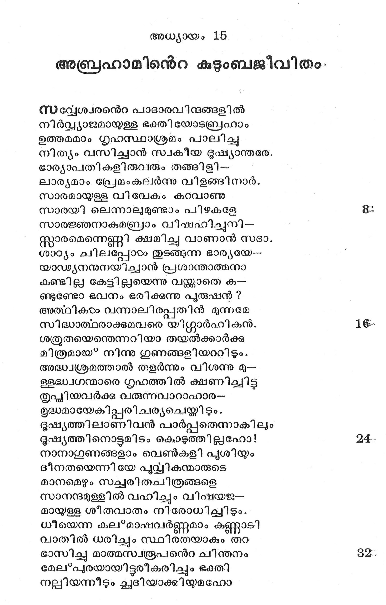
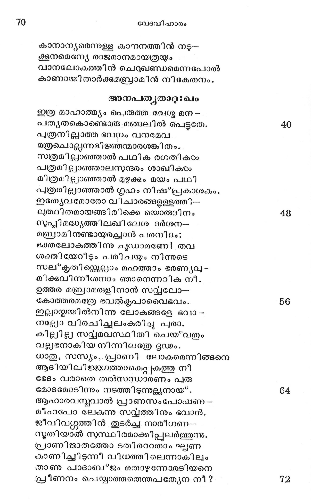
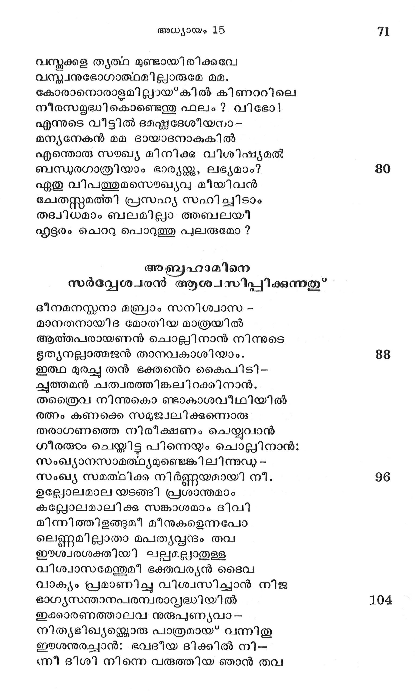
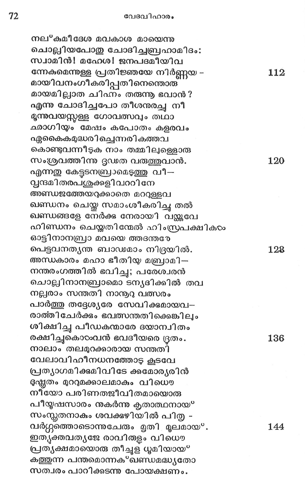

അബ്രഹാമിന്െറ കുടുംബജീവിതം.
സല്യേശ്വരന്െറ പാദാരവിന്ദങ്ങളില്
നിര്വ്വ്യാജമായ്ള്ള ഭക്തിയോടബ്രഹാം
ഉത്തമമാം ഗൃഹസ്ഥാശ്രമം പാലിച്ചു
നിത്യം വസിച്ചാന് സ്വകീയ ഭൂഷ്യാന്തരേ.
ഭാര്യാപതികളിരുവരും തങ്ങി ളി --
ലാര്യമാം പ്രേമംകലര്ന്നു വിളങ്ങിനാ൪.
സാരമായ്ള്ള വി വേകം കുറവാണു
സാരയി ലെന്നാലമുണ്ടാം പിഴകളേ
സാരജ്ഞനാകുമബ്രാം വിഷഹിച്ചുനി-
സ്ത്റാരമെന്നെണ്ണി ക്ഷമിച്ചു വാണാന് സദാ.
ശാഠ്യം ചിലപ്പോടം തുടങ്ങുന്ന ഭാര്യയേ--
യാഡ്യനനുനയിച്ചാന് പ്രശാന്താത്മനാ
കണ്ടില്ല കേട്ടില്ലയെന്നു വയ്ക്കാതെ ക--
ണ്ടുണ്ടോ ഭവനം ഭരിക്കുന്നു പുരുഷന് ?
അത്ഥികടം വന്നാലിരപ്പതിന് മുന്നമേ
സിദ്ധാത്ഥരാക്കുമവരെ യിഗ്ഗാര്ഹികന്.
ശര്രുതയെന്തെന്നറിയാ തയല്ക്കാര്ക്കു
മിത്രമായ നിന്നു ഗുണങ്ങളിയററിടും.
അദ്ധ്വശ്രമത്താല് തളര്ന്നും വിശന്നു മു--
ളളദ്ധ്വഗന്മാരെ ഗൃഹത്തില് ക്ഷണിച്ചിട്ട
തൃപ്ധിയവര്ക്ക വരുന്നവാറാഹാര-
മൂദ്ധമായേകിപ്പരിചര്യചെയ്തിടും.
ഭൂഷ്യത്തിലാണിവന് പാര്പ്പതെന്നാകിലും
ഭൂഷ്യത്തിനൊട്ടമിടം കൊടുത്തില്ലഹോ!
നാനാഗുണങ്ങളാം വെണ്കളി പുശിയ്യം
ദീനതയെന്നിയേ പുവ്വികന്മാരുടെ
മാനമെഴും സച്ചരിതചിത്രങ്ങളെ
സാനന്ദമുള്ളില് വഹിച്ചും വിഷയജ--
മായുള്ള ശീതവാതം നിരോധിചല്ചിടും.
ധീയെന്ന കല*മാഷവര്ണ്ണമാം കണ്ണാടി
വാതില് ധരിച്ചും സ്ഥിരതയാകും തറ
ഭാസിച്ചു മാത്മസ്വരൂപനന്െറ ചിന്തനം
മേല*പുരയായിട്ടരീകരിച്ചും ഭക്തി
നല്ലിയന്നീടും ക്ലദിയാക്കിയുമഹോ.

കാനാന്യരെന്നുള്ള കാനനത്തിന് നടു--
ക്കൂനമെന്റയേ രാജമാനമായത്രയ്യം
വാനലോകത്തിന് ചെറുഖണ്ഡമെന്നപോല്
കാണായി താര്ക്കുമബ്രാമിന് നികേതനം.
അനുപത്യതാഭ $ഖ്വം
ഇത്ര മാഹാത്മ്യം പെരുത്ത വേഗ മന -
പത്ൃയതകൊണ്ടൊരു മങ്ങലില് പെട്ടുതേ.
പുത്രനിലാത്ത ഭവനം വനഭമവ
മത്രചൊല്ലുന്നഭിജ്ഞന്മാരശങ്കിതം.
സത്രമില്ലയാഞ്ഞാല് പഥിക രഗതികഠം
പത്രമില്ലാഞ്ഞാലസുന്ദരം ശാഖികംം
മിത്രമില്ലാഞ്ഞാല് മുഴുക്കും മയം പഥി
പുത്രരില്ലാഞ്ഞാല് ഗൃഹം നിഷ'പ്രകാശകം.
ഇത്യേവമോരോ വിചാരങ്ങളള്ളത്തി--
ലത്ഥിതമായങ്ങിരിക്കെ യൊരുദിനം
സുപ്യിമദ്ധ്യത്തിലഖി ലേശ ദര്ശന--
മബ്രാമിനുണ്ടായയരച്ചാന് പരനിദം:
ഭക്തലോകത്തിന്നു ചുഡാമണേ! തവ
ശക്തി യേറീടും പരിചയും നിന്നുടെ
സല്കൃതിഞയ്കെല്ലാം മഹത്താം ഭരണ്യവു -
മിക്കുവിന്നീശനാം ഞാനെന്നറിക നീ.
ഉത്തര മബ്രാമരുളി നാന് സവ്പലോ--
ഭകോത്തരമത്രേ ഭവൽകൃപാവൈഭവം.
ഇല്ലായ്മയില്നിന്നു ലോകങ്ങളേ ഭവാ -
നല്ലോ വിരചിച്ചലംകരിച്ചു പുരാ.
കില്ലില്ല സവ്യവയമവസ്ഥിതി ചെയ*വതും
വല്ലഭനാകിയ നിന്നിലത്രേ ദൃഡം.
ധാതു, സസ്യം, പ്രാണി ലോകമെന്നിങ്ങനെ
ആദിയിലിജ്ജഗത്താകെപ്പകത്തു നീ
ഭേദം വരാതെ തൽല്സന്ധാരണം പുരു
മോദമോടിന്നും നടത്തിടുന്നുല്പനായ*.
ആഹാരവസ്മവാല് പ്രാണസംപോഷണ -
മീഹപോ ലേകുന്നു സവ്വയത്തിനും ഭവാന്.
ജീവിവഗ്ശത്തിന് തുടര്ച്ച നാരീഗണ--
സുതിയാല് സുസ്ഥിരമാക്കിപ്പുലര്ത്തുന്നു.
പ്രാണിജാതത്തോ ടതിരററതാം ൨്ലണ
കാണിച്ചിടുന്നീ വിധത്തിലെന്നാകിലും
താണു പാദാബ*ജം തൊഴന്നോരടിയനെ
പ്രീണനം ചെയ്യാത്തതെന്തപത്യേന നീ?

വസ്തുക്കള തൃത്ഥ മുണ്ടായി രിക്കവേ
വന്റ്വനുഭോഗാത്ഥമില്ലാരുമേ മമ.
കോരാനൊരാളമില്ലായ”കില് കിണററിലെ
നീരസളമൃദ്ധികൊണ്ടെത്തു ഫലം? വിഭോ
എന്നുടെ വീട്ടില് ദമഷ്ധദേശീയനാ -
മന്യനേകന് മമ ദായാദനാകുകില്
എന്തൊരു സംഖ്യ മിനിക്കു വിശിഷ്യമല്
ബന്ധുരഗാത്രിയാം ഭാര്യയ്ക്കു, ലഭ്ൃയമാം? ൫0
ഏതു വിപത്തുമസൌഖ്യവു മീയിവന്
ചേതസ്സമത്തി പ്രസഹ്യ സഹിച്ചിടാം
തദ്വിധമാം ബലമിലാ ത്തബലയീ
ഹൃദ്ൂരം ചെററു പൊറുത്തു പുലരുമോ ?
അബ്രഹാമിനെ സര്വ്വേശ്വരന് ആശ്വസിപ്പിക്കുന്നതു*
ദീനമനസ്തനാ മബ്രാം സനിശ്വാസ -
മാനതനായിദ മോതിയ മാത്രയില്
ആത്തപരായണന് ചൊല്ചിനാന് നിന്നുടെ
ഭൂത്യനല്ലാത്മജന് താനവകാശിയാം. 88
ഇത്ഥ മുരച്ച തന് ഭക്തന്െറ കൈപിടി-
കൃത്തമന് ചത്വരത്തിങ്കലിറക്കിനാന്.
തത്രൈവ നിന്നുകൊ ണ്ടാകാശവീഥിയില്
രത്നം കണക്കെ സമുജ്വലിക്കുന്നൊരു
തരാഗണത്തെ നിരീക്ഷണം ചെയ്യുവാന്
ഗീരരുടം ചെയ്തിട്ട പിന്നെയും ചൊല്ലിനാൻ:
സംഖ്യാനസാമത്ഥ്യമുണ്ടെങ്കിലിന്നുഡു -
സംഖ്യ സമത്ഥിക്ക നിര്ണ്ണയമായി നീ. 96
ഉല്ലോലമാല യടങ്ങി പ്രശാന്തമാം
കല്ലോലമാലിക്കു് സങ്കാശമാം ദിവി
മിന്നിത്തിളങ്ങുമീ മീനുകളെന്നപോ
ലെണ്ണമില്ലാതാ മപത്യവ്വന്ദം തവ
ഈശ്വരശക്തിയി ലല്വമല്വാതുള്ള
വിശ്വാസമേന്തുമീ ഭക്തവര്യന് ദൈവ
വാക്യം പ്രമാണിച്ചു വിശ്വസിച്ചാന് നിജ
ഭാഗ്യസന്താനപരമ്പരാവൃദ്ധിയില് 104
ഇക്കാരണത്താലവ നുരുപുണ്യവാ-
നിതൃഭിഖ്യയ്തൊരു പാത്രമായ" വന്നിതു
ഈശനുരച്ചാന്: ഭവദീയ ദിക്കില് നി-
ന്നീ ദിശി നിന്നെ വരുത്തിയ ഞാന് തവ

നല്കമീ ദേശ മവകാശ മായെന്നു
ചൊല്ലിയപോതു ചോദിചബ്രഹാമിദം:
സ്വാമിന്! മഹേശ! ജനപദമീയിവ
ന്നേകുമെന്നുള്ള പ്രതിജ്ഞയേ നിര്ണ്ണയ -
മായിവനംഗീകരിപ്പതിനെന്തൊരു
മായമില്ലാത ചിഹ്നം തരുന്നൂ ഭവാന്?
എന്നു ചോദിച്ചപോ തീശനുരച്ചു നീ
മൂന്നുവയസ്തള്ള ഗോവത്സവും തഥാ
ഛാഗിയും മേഷം കപോതം കളരവം
൨ഏകൈകകമുദ്ധരിച്ചെന്നരികത്തവ
കൊണ്ടുവന്നീടുക നാം തമ്മിലുളെളൊരു
സംശ്രവത്തിന്നു ദൂഡത വരുത്തുവാന്.
എന്നതു കേട്ടടനബ്രരാമെടുത്തു വീ--
വൃന്ദമിതരപശുക്കളി വററിനേ
അണ്ഡജത്തേയറുക്കാതെ മററുള്ളവ
ഖണ്ഡനം ചെയ്ത സമാംശീകരിച്ചു തല്
ഖണ്ഡങ്ങളേ നേര്ക്കു നേരായി വയ്ക്കുവേ
ഹിണ്ഡനം ചെയ്തതിന്മേല് ഹി എസ്രപക്ഷികം
ഓട്ടിനാനബ്രാ മവയെ ത്തദന്തരേ
പെട്ടവനത്യന്ത ബാഡമാം നിദ്രയില്.
അന്ധകാരം മഹാ ഭീതിയ മബ്രാമി-
നന്തരംഗത്തില് ഭവിച്ചു; പരേശ്വരന്
ചൊല്ലിനാനബ്രാമൊ ടന്യദിക്കില് തവ
നല്ലരാം സന്തതി നാനൂറു വത്സരം
പാര്ത്തു തദ്ദേശ്യരേ സേവിക്കുമായവ--
രാത്തി ചേര്ക്കും ഭവത്സന്തതിക്കെങ്കിലും
ശിക്ഷിച്ചു പീഡകുന്മാരേ ദയാന്വിതം
രക്ഷിച്ചുകൊടംവന് ഭവടീയരെ ദ്രതം.
നാലാം തലമുറക്കാരായ സന്തതി
വേലാവിഹീനധനത്തോട കൂടവേ
പ്രത്യാഗമിക്കുമിവിടേ ക്കമോര്യരിന്
ദുഷ്മതം മുററുമക്കാലമാകും വിധൌ
നീയോ പരിണതജീവിതമായൊരു
പീയുഷസാരം നുകര്ന്നു കൃതാത്ഥനായ"
സംസ്കൃതനാകും ശവക്കുഴിയില് പിതൃ -
വര്ഗ്ഗുത്തൊടൊന്നുചേരും മൃതി മൂലമായ.
ഇത്യക്തവത്യജേ രാവിരുളം വിധൌ
പ്രത്യക്ഷമായൊരു തീച്ചുള ധുമിയായ*
കത്തുന്ന പന്തമൊന്നക്*ഖണ്ഡമദ്ധ്യതോ
സത്വരം പാറിക്കടന്നു പോയക്ഷണം.

അബ്രാമിനോടു പരനുരച്ചുതദാ
ശുദ്രബദ്ധേ! തവസന്തതിക്കെന്നുമേ
കേന്യര്, കെനിസ്യര്, കദമോന്യരാദിയാ
മന്ൃയജാതിക്കാര് കുടിയേറിയുളെളാൊരു 152
മിസ്രനദിമുതല് ഫ്രാത്തുവരെയുളള
വിശ്രുതമാം മഹാ ദേശമരുളവന്ം
ഇത്ഥം നിയമമുല്ഘോഫഷിച്ചു തന്നുടെ
ഭക്തനേയാശ്വസിപ്പിച്ചാന് കൃപാലയന്.